Retour
Page précédente
Page suivante
QCM : Les Formations Glaciaires et Périglaciaires - Auto-évaluation
Des empreintes profondes dans le paysage !
1. Cette carte de l'Antarctique montre en couleur les parties de l'inlandsis, qui sans s'être détachées de la partie centrale, ne repose plus complètement sur la croûte continentale et commence à former des masses flottantes, épaisses, au contact de l'océan. Comment s'appelle ces parties de l'inlandsis ?
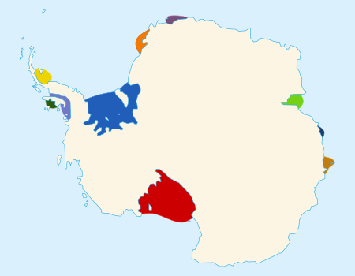
×
A) Des radeaux de glace
B) Des plate-formes glaciaires
C) La banquise
D) Des "ice shelves"
E) Des barrières de glace
Commentaire:
Ces structures, appelées plateformes glaciaires ou "ice shelves", sont des extensions flottantes de la calotte glaciaire terrestre. Elles jouent un rôle crucial en ralentissant l'écoulement des glaciers vers la mer. Contrairement à la banquise, elles sont alimentées par la glace qui s'écoule des terres et non par la congélation de l'eau de mer.
2. Comment s'appelle l'obstruction d'une voie d'eau (torrent, rivière, ...) par des glaces ?
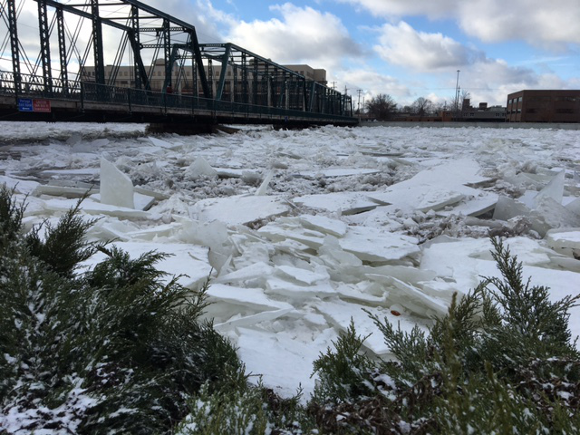
×
A) Une crue glaciaire
B) Une bâcle glaciaire
C) Une débâcle glaciaire
D) Un embâcle glaciaire
Commentaire:
L'obstruction d'une voie d'eau par des glaces est appelée un embâcle de glace. Ce phénomène peut se produire lorsque des blocs de glace s'accumulent et forment un barrage naturel, pouvant entraîner des inondations en amont et une montée rapide des eaux en cas de rupture.
3. Pourquoi un embâcle glaciaire est-il dangereux au niveau des piles d'un pont ?
Votre navigateur ne supporte pas la lecture de cette vidéo.
A) Il peut exercer une forte pression sur les structures et les endommager
B) L'embâcle surcreuse le fond de la rivière
C) L'embâcle crée des sous-pressions à la base des piles du pont
D) Il accélère le courant sous le pont, augmentant l'érosion
Commentaire:
Un embâcle glaciaire est dangereux au niveau des piles d'un pont car la glace accumulée exerce une forte pression sur les structures, ce qui peut entraîner des dommages mécaniques ou même l'effondrement du pont. De plus, il peut aggraver les inondations en amont et augmenter les risques de rupture soudaine, provoquant une onde de crue.
4. Quelle est la densité de l'eau de mer ?
A) 0.917
B) 1.01325
C) 1.025
D) 1.0
Commentaire:
La densité moyenne de l'eau de mer est d'environ 1.025, légèrement supérieure à celle de l'eau douce en raison de sa salinité. Elle peut varier en fonction de la température, de la pression et de la concentration en sels dissous.
5. L'iceberg qui a été percuté par le Titanic avait, d'après les témoins rescapés, une hauteur d'une trentaine de mètres. Quelle était sa profondeur ?
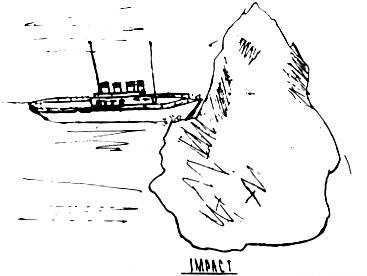
×
A) ~ 200 m
B) ~ 270 m
C) ~ 240 m
D) ~ 300 m
Commentaire:
La profondeur d’un iceberg peut être estimée en considérant que seulement environ 10 % de sa masse est visible au-dessus de l’eau. Si l’iceberg mesurait environ 30 mètres de hauteur émergée, sa profondeur sous-marine était d’environ 270 mètres.
6. Comment s'appelle le phénomène provoqué par le dégel suivant une longue période de gel intense, et qui est marqué par
une fonte rapide de la couverture neigeuse et glaciaire, libérant de grandes quantités d'eau de fonte ruisselant sur un sol resté gelé (donc imperméable),
une montée brusque et rapide du débit et de l'énergie des cours d'eau,
un écoulement puissant entraînant de grandes plaques de glaces, qui s'entrechoquent, se chevauchent et se fracassent ?
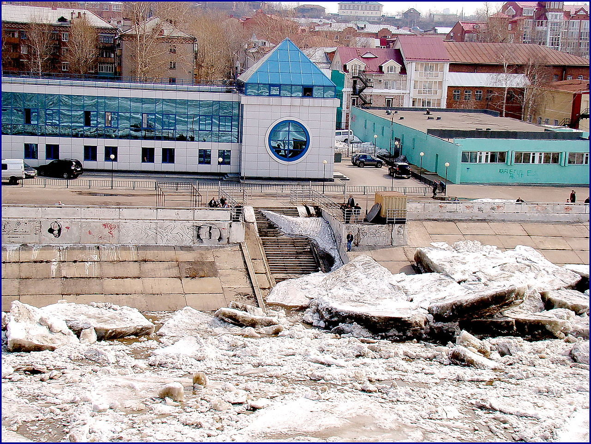
×
Votre navigateur ne supporte pas la lecture de cette vidéo.
A) La débâcle
B) L'embâcle
C) La barnacle
D) La renâcle
Commentaire:
Ce phénomène s'appelle la débâcle. Il se produit généralement au printemps, lorsque les températures augmentent rapidement après une période prolongée de gel. La débâcle peut entraîner des inondations soudaines et des destructions importantes, en particulier dans les régions où les cours d'eau sont obstrués par des plaques de glace en mouvement.
7. Qu'est-ce que le vent catabatique ?
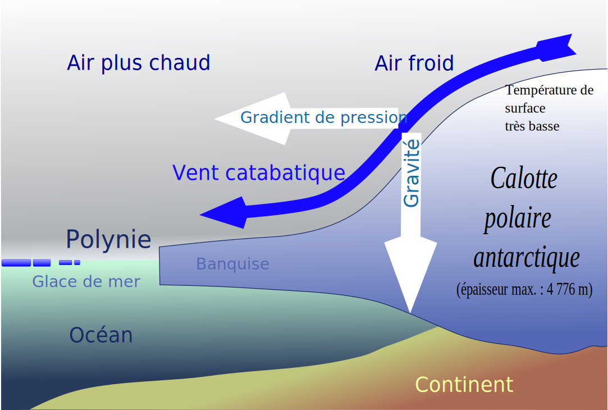
×
A) C'est un vent ascensionnel produit par une masse d'air froide et légère qui monte le long de la pente d'un relief.
B) C'est vent ascensionnel d'une masse d'air réchauffée le long d'un relief.
C) C'est un vent gravitationnel, produit par une masse d'air froide et lourde qui descend le long de la pente d'un relief.
D) C'est un vent gravitationnel produit par une masse d'air chaude et légère qui descend le long de la pente d'un relief.
Commentaire:
Le vent catabatique est un vent descendant qui se forme lorsque de l'air dense, refroidi par le contact avec des surfaces glacées ou enneigées, glisse le long des pentes sous l'effet de la gravité. Ces vents sont fréquents dans les régions polaires et peuvent atteindre des vitesses très élevées, notamment en Antarctique.
8. Qu'est-ce que la banquise ?
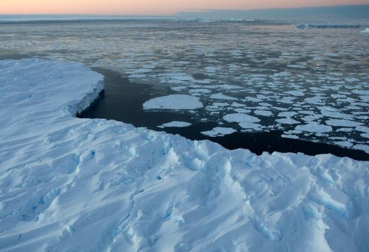
×
A) Une masse de glace détachée d'un glacier flottant sur l'océan.
B) Des glaciers qui recouvrent des terres englacées.
C) La couche de glace qui se forme à la surface de l'eau (mer, lacs, rivières) lors du gel des couches superficielles d'eau.
D) Des mers encombrées de masses de glace flottante produites uniquement par le vêlage des glaciers.
Commentaire:
La banquise est une étendue de glace qui se forme à la surface de l'océan par congélation de l'eau de mer. Contrairement aux glaciers ou aux calottes glaciaires, elle ne repose pas sur la terre ferme et peut s'étendre ou se réduire selon les saisons et les conditions climatiques.
9. Où sommes-nous ?
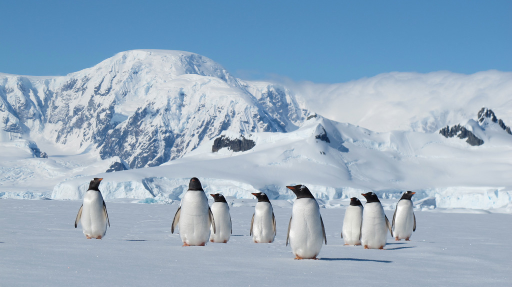
×
A) En Antarctique, car nous voyons des pingouins.
B) Près du pôle Nord, car nous voyons des pingouins.
C) Près du Pôle Nord, car nous voyons des manchots.
D) En Antarctique, car nous voyons des manchots.
Commentaire:
Nous sommes en Antarctique, car seuls les manchots (et non les pingouins) vivent dans l'hémisphère sud, notamment en Antarctique et sur les îles proches. Les pingouins, quant à eux, se trouvent dans l'hémisphère nord.
10. Comment s'appellent ces larges trous d'eau libre, non englacés, pouvant atteindre plusieurs milliers de km
2
de surface, et qui se reforment souvent au même endroit au milieu de la banquise ?
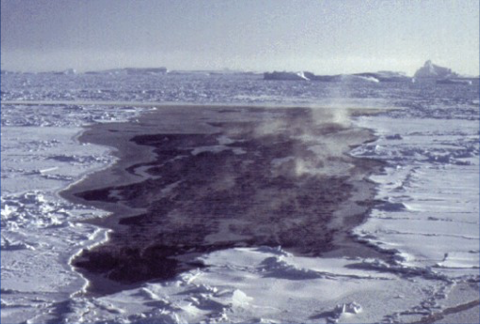
×
A) Des philogynies
B) Des pleurodynies
C) Des polynies
D) Des onirodynies
Commentaire:
Ces zones libres de glace au milieu de la banquise sont appelées des polynies. Elles se forment principalement à cause de courants marins, de vents ou d'échanges thermiques particuliers, et elles jouent un rôle crucial pour les écosystèmes marins et les échanges atmosphère-océan.
11. Dans le diagramme ci-dessous, que signifie le terme
calving
?
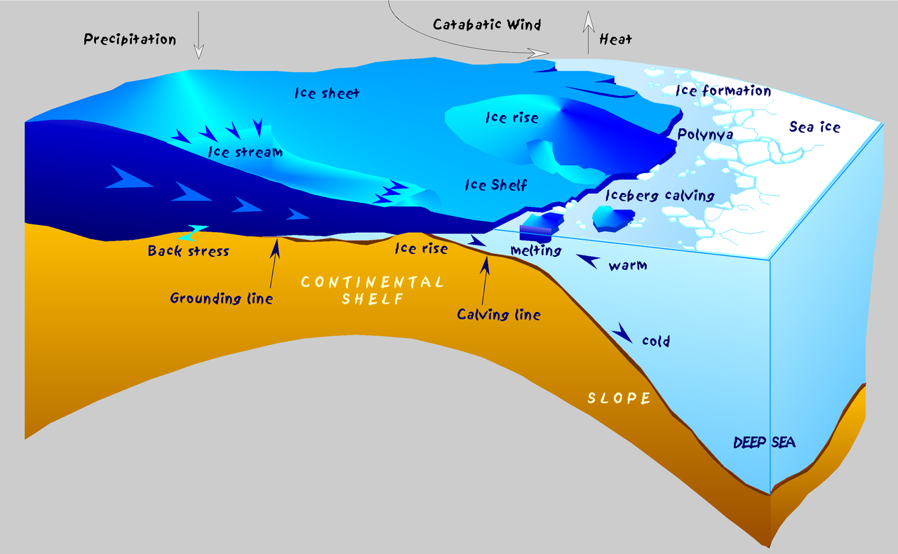
×
A) La formation de fissures dans un glacier en mouvement.
B) La compression des glaces dans une calotte polaire.
C) Le détachement de blocs de glace d’un glacier ou d’une plateforme glaciaire qui tombent dans la mer pour former des icebergs.
D) La fonte de la glace à la surface d’un glacier ou d’une plateforme glaciaire.
Commentaire:
Le terme
calving
désigne le processus par lequel des blocs de glace se détachent d’un glacier ou d’une plateforme glaciaire pour former des icebergs. Ce phénomène est courant lorsque les glaciers atteignent une étendue d’eau, comme un lac ou un océan.
12. Au vu du diagramme ci-dessous, quels sont les deux grands mécanismes de formation des polynies ?
×
A) Le vent catabatique, qui réchauffe la surface de la banquise et la fait fondre localement.
B) Le vent catabatique, qui entraîne la banquise au large.
C) Les courants qui font dériver la banquise au large.
D) Les courants ascendants d'eaux profondes et chaudes.
Commentaire:
Les polynies se forment principalement par deux mécanismes : la chaleur océanique, qui empêche la glace de se reformer en raison des eaux plus chaudes remontant à la surface, et l’action des vents, qui éloignent la glace déjà formée, laissant une zone libre d’eau. Ces phénomènes expliquent leur localisation récurrente dans certaines régions.
13. Comment désigne-t-on les glaciers immenses recouvrant les terres continentales sur des des millions de km
2
?
A) Des inlandices
B) Des comices
C) Des haruspices
D) Des outlandsis
E) Des inlandsis
F) Des outlandices
G) Des immondices
Commentaire:
Ces immenses glaciers sont appelés inlandsis. Ils recouvrent des terres continentales sur de vastes surfaces, comme ceux du Groenland et de l'Antarctique. Ce sont les plus grandes masses glaciaires de la planète.
14. Quel est l'origine étymologique du mot
Arctique
?
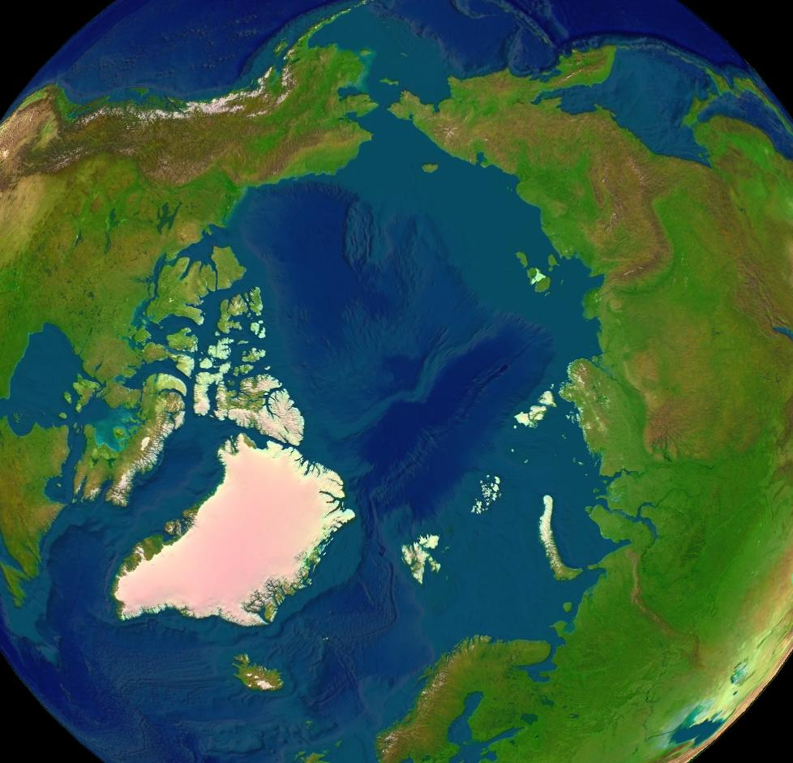
×
A) D'une racine scandinave, désignant les "sauvageons".
B) D'une racine grecque, désignant des peuplades formées de chasseurs experts en tir à l'arc.
C) D'une racine grecque faisant référence aux ours.
D) D'une racine scandinave faisant référence aux loups.
Commentaire:
Le mot Arctique vient du grec ancien "arktikos", qui signifie "relatif à l'ours", en référence à la constellation de la Grande Ourse, visible dans les régions nordiques.
15. Quels sont les inlandsis actuels sur Terre ?
A) L'inlandsis de l'Alaska
B) L'inlandsis de l'Arctique
C) L'inlandsis de l'Antarctique
D) L'inlandsis du Groenland
Commentaire:
Les deux principaux inlandsis actuels sont ceux de l'Antarctique et du Groenland. Ces vastes glaciers recouvrent de grandes parties de ces continents.
16. Quelles régions étaient entièrement recouvertes par un inlandsis lors des dernières glaciations ? (toute surface englacée, de plus de 50 000 km
de surface sera considérée comme un inlandsis)
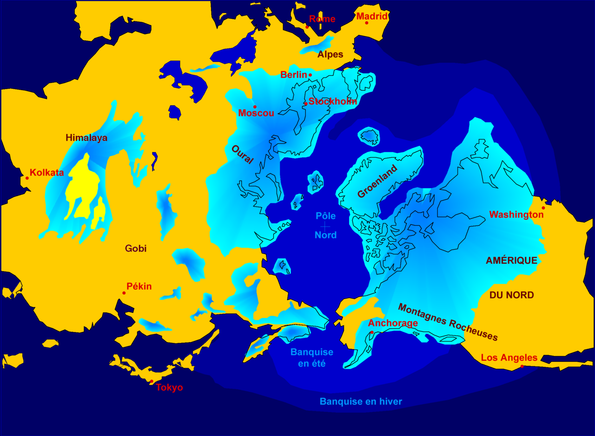
×
A) La Scandinavie
B) L'Oural
C) L'Europe de l'Ouest
D) Le désert de Gobi
E) Le Nord du continent nord-américain
Commentaire:
Lors des dernières glaciations, des inlandsis ont recouvert de vastes régions, notamment la Scandinavie, l'Oural, ainsi que le nord du continent nord-américain. Ces glaces ont eu un impact majeur sur le paysage et le climat de ces régions.
17. Le document ci-dessous montre les paléo-températures en Antarctique lors des ères glaciaires et interglaciaires, estimées d'après les variations isotopiques enregistrées dans les carottes de glace de la base russe de Vostok. Quelles affirmations sont valides ?
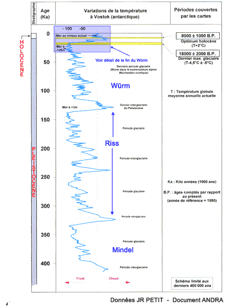
×
A) Le refroidissement au début d'une ère est relativement lent.
B) Le refroidissement au début d'une ère glaciaire est relativement rapide.
C) Le réchauffement à la fin d'une ère glaciaire est relativement rapide.
D) Le réchauffement à la fin d'une ère glaciaire est relativement lent.
Commentaire:
D'après les données des carottes de glace, le réchauffement à la fin d'une ère glaciaire se produit rapidement, tandis que le refroidissement au début d'une ère glaciaire est plus progressif.
18. Pour les spécialistes, qu'est-ce qui caractérise la période du Quaternaire, dont le début a été fixé à -2.58 Ma ?
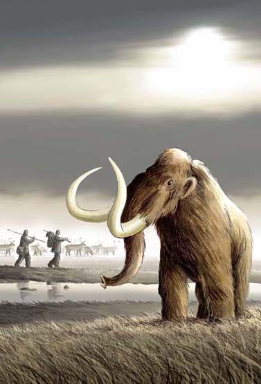
×
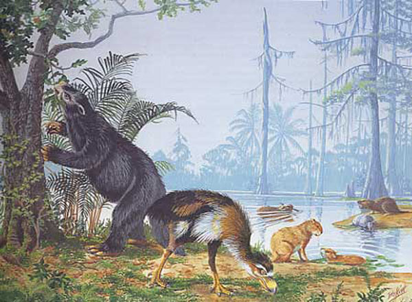
×
A) La surrection des chaînes de montagnes (Alpes, Himalaya, ...).
B) La fin des Dinosaures.
C) L'extinction de nombreuses espèces de plantes et d'animaux.
D) L'apparition du genre
Homo
.
E) L'ouverture de l'océan Atlantique.
F) Le retour des glaciations.
Commentaire:
Le Quaternaire est caractérisé par des alternances de périodes glaciaires et interglaciaires, marquées par des changements climatiques importants et l'évolution des espèces humaines.
19. Parmi ces époques géologiques, sélectionner celles qui appartiennent à l'ère du Quaternaire ?
A) L'Holocène
B) Le Pléistocène
C) L'Eocène
D) Le Paléocène
E) L'Oligocène
F) Le Pliocène
G) Le Miocène
Commentaire:
Les deux époques géologiques qui appartiennent à l'ère du Quaternaire sont le Pléistocène et l'Holocène, qui couvrent la période des dernières glaciations et de l'émergence de l'Homme moderne.
20. Quel nom était donné à l'ancien inlandsis au nord de l'Amérique du Nord ?
A) L'inlandsis arctique
B) L'inlandsis canadien
C) L'inlandsis laurentidien
D) L'inlandsis nord-américain
Commentaire:
L'inlandsis laurentidien était l'immense glacier qui recouvrait le nord de l'Amérique du Nord pendant les dernières glaciations, notamment la région de ce qui est aujourd'hui le Canada et le nord des États-Unis.
21. La carte ci-dessous présente l'Est du Canada,il y a environ entre -13 000 ans BP et -10 600 ans BP. La région était alors recouverte par une grande mer, la mer de Champlain. Pourquoi cette grande incursion marine ?
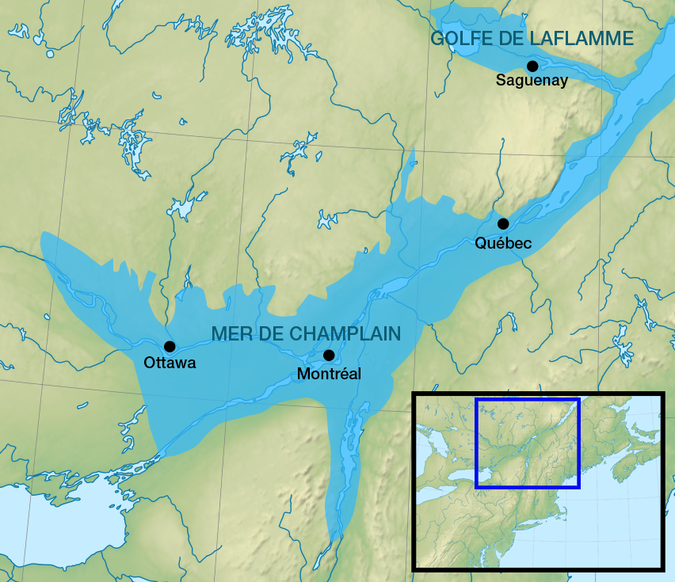
×
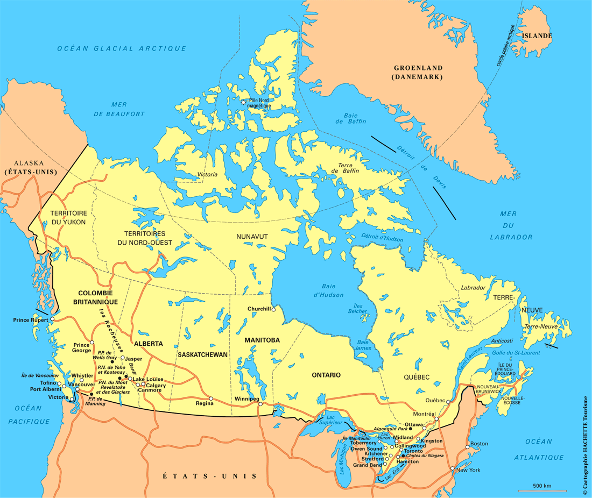
×
A) Le bouclier canadien s'était affaissé lors des époques glaciaires en raison du refroidissement de la lithosphère sous-jacente. Il a fallu quelques milliers d'années pour que la lithosphère se réchauffe après la déglaciation et retrouve son équilibre isostasique.
B) Cette région est un fossé d'effondrement qui a été réactivé dernièrement.
C) Le niveau de la mer était plus haut qu'actuellement.
D) Le bouclier canadien s'était affaissé lors des époques glaciaires sous le poids le l'inlandsis laurentidien, et il faut un peu de temps (quelques milliers d'années) pour que la lithosphère retrouve son équilibre isostasique après la fonte des glaciers.
Commentaire:
L'incursion marine de la mer de Champlain est due à l'affaissement du bouclier canadien sous le poids de l'inlandsis laurentidien. Après la déglaciation, l'isostasie a permis à la région de se remplir d'eau jusqu'à ce que l'équilibre soit atteint.
22. La mer de Champlain a laissé des dépôts argileux, appelés argiles de Leda.
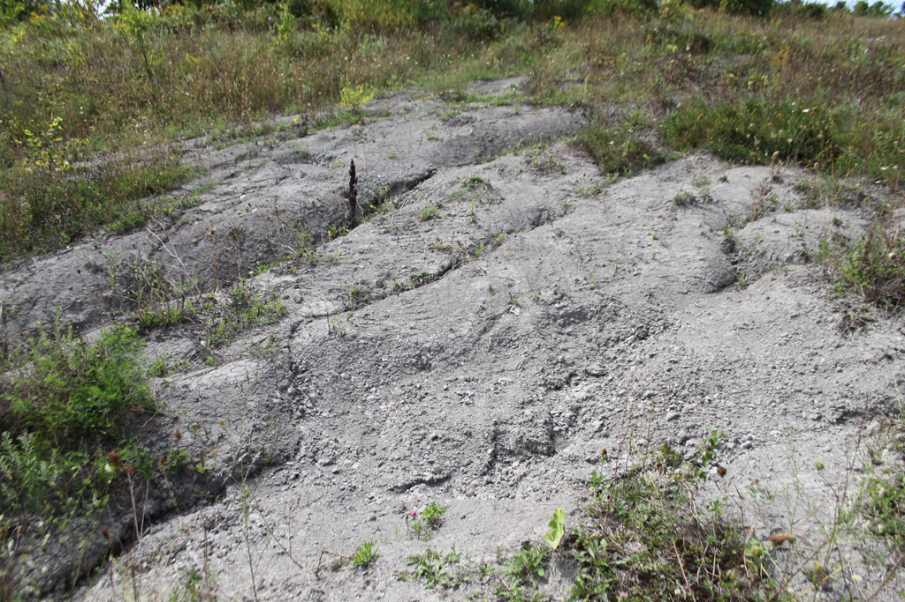
×
Votre navigateur ne supporte pas la lecture de cette vidéo.
A) Ces argiles proviennent de leur entraînement par les eaux de fonte des glaciers.
B) Ce sont des argiles qui sont sujettes à des problèmes de liquéfaction, car elles sont saturées en eau et mal consolidés.
C) Ces argiles sont bien consolidées, car elles ont été tassées par le passage des glaciers.
D) Ces argiles sont apportées par les courants sous-marins.
Commentaire:
Les argiles de Leda proviennent de la fonte des glaciers et, en raison de leur forte teneur en eau et de leur faible consolidation, elles peuvent provoquer des phénomènes de liquéfaction, posant des problèmes pour la construction et les infrastructures.
Corriger
Recommencer